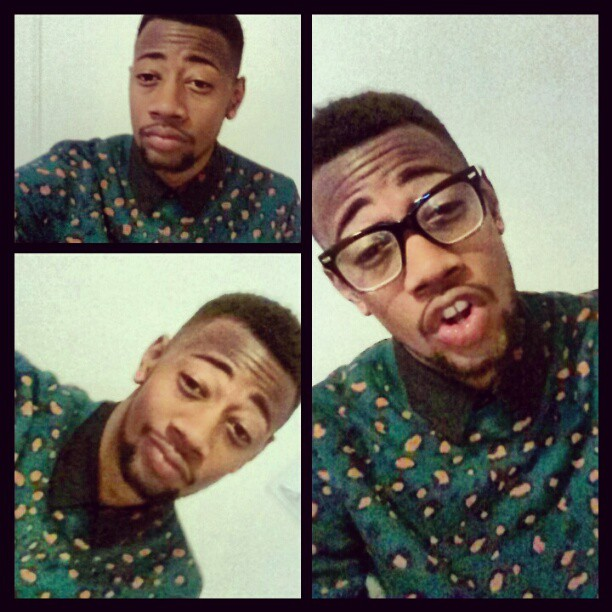

About Me
Name: Christopher Hill
School: Senior at Michigan State University
Major: Media Arts and Technology
Graduation Year: May 2013
Study Abroad: Writing in NYC & Technology and Video Games in Japan.
Internships: 89 FM Impact Radio, Complex Magazine, Maxim Magazine, Vh1.
During the course of my college career I've been through many experiences that have helped me to be successful in the world once I graduate. For one I've learned many skills throughout my courses about the communication design world. I began as a Graphic Design major and then switched over to Media Arts, which are the same in a lot of way. I've learned skill in web design, modeling 3D computer figures, typography, 3D art forms, graphic communication, and video production.
While studying in New York City I was able to take my learning from the standard classroom to one of the most amazing cities in the world becoming my classroom. We went all over New York City and seen all of the best spots in the city. Through those experiences we wrote about how we had been inspired by the city. I've been able to use the skills I've learned in the "real world" in many ways, such as going to Japan and having to present our skills to a classroom full of students from a completely different country.
Another example of using my skills in the "real world" are internships. Through internships you really learn what are the most important skills that will come in handy everyday and how to tailor your skills to fit a business. Internships also show that you've worked in media world and will be beneficial to other companies, because they know you have experience. If it wasn't for college I wouldn't have found my way to learning all the things I love and where I want to be once I'm ready for graduation.